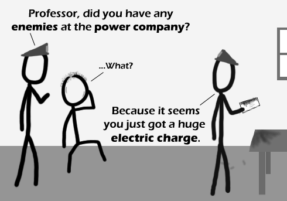

Comic JK 347
When I Feel Like It
⇤
<
?
>
⇥

⇤
<
?
>
⇥
Forum
.
RSS
.
Digg
.
Facebook
.
Reddit
.
Twitter
.
Stumbleupon
Enter your thoughts on number 347 here. Please, no spamming, trolling, or phreaking. So. Many. Puns! >Most of them are at least obscure. This one isn't as amusing... >>There are some people that absolutely love puns, like me =DDD ...is that scientist that I smell? Duracell bunny arrested - charged with battery. >Then they found out that he'd run out of energy, so they changed the charge to assault. Just last night I remarked to someone about a radio ad saying I'd be shocked by my electric bill.... the duracell bunny is dead from exhaustion, someone put the battery in backwards and he kept coming and coming..... >The hell are you talking about? Energizer has the bunny! I know, because I've helped pack up their hot air balloon. In case anyone's curious, the thing is pretty damn heavy. >>Yeah, I was wondering why they were saying 'duracell bunny' not 'energizer bunny' there... But neither would be able to beat my carbohydrates-powered bunny! >>>The Energizer bunny is just a lame imitation: en.wikipedia.org/wiki/Duracell_Bunny I tried to get my bunny to run on batteries. It struggled at first, but now it's awful quiet. I think this has the potential to make some good puns. ...I'll get my coat.